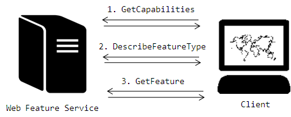
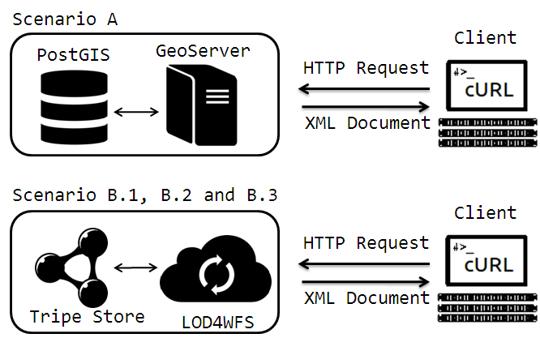
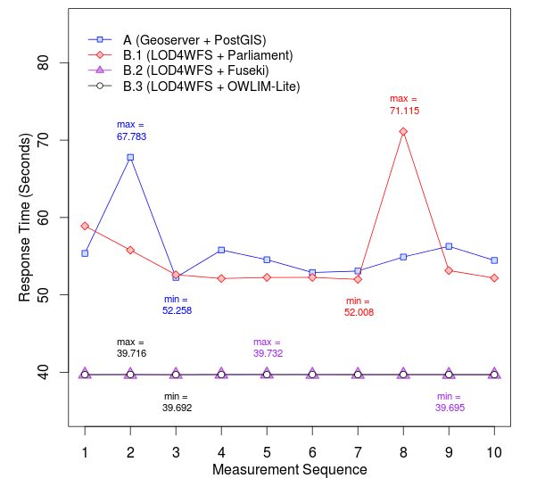

<!DOCTYPE HTML PUBLIC "-//W3C//DTD HTML 4.0 Transitional//EN">
<html>
<head>
<meta http-equiv="CONTENT-TYPE" content="text/html; charset=windows-1252" />
<title></title>
<meta name="GENERATOR" content="OpenOffice 4.0.1  (Win32)" />
<meta name="AUTHOR" content="Martin" />
<meta name="CREATED" content="20130923;20510000" />
<meta name="CHANGEDBY" content="Jim Jones" />
<meta name="CHANGED" content="20130926;10310000" />
<meta name="AppVersion" content="12.0000" />
<meta name="Company" content="Microsoft" />
<meta name="DocSecurity" content="0" />
<meta name="HyperlinksChanged" content="false" />
<meta name="LinksUpToDate" content="false" />
<meta name="ScaleCrop" content="false" />
<meta name="ShareDoc" content="false" />
<style type="text/css">
<!--

.grid-1 { width: 40px; }

.grid-2 { width: 100px; }

.grid-3 { width: 160px; }

.grid-4 { width: 220px; }

.grid-5 { width: 280px; }

.grid-6 { width: 340px; }

.grid-7 { width: 400px; }

.grid-8 { width: 460px; }

.grid-9 { width: 520px; }

.grid-10 { width: 580px; }

.grid-11 { width: 640px; }

.grid-12 { width: 700px; }

.grid-13 { width: 760px; }

.grid-14 { width: 820px; }

.grid-15 { width: 880px; }

.grid-16 { width: 940px; }

.left { float:left }

.right { float:right }

body {
	background:#fefefe;
	color:#333;
	font-size: 17px;
}

#container { margin:0 auto; }

code {
	background: #eee;
	display: block;
	padding: 20px;
	border-top: 3px solid #aeaeae;
}

#menu li { list-style:none; }

#menu {
	position: fixed;
	top: 7%;
	z-index:10;
	margin-left:0;
}

#menu ul {
	padding-left:0;
	margin-left:0;
}

#menu li {
	padding: 0px;
	margin: 10px 0;
	display: block;
}

#menu li a {
	display: block;
	font-size: 14px;
	background: #36a7c7;
	padding: 12px 10px 15;
	margin: 0 auto;
	color:#fff;
	font-weight:bold;
	text-decoration:none;
	border-top:3px solid #1399bd;
}

#menu li a:hover {
	background:#1399bd;
	border-top:3px solid #36a7c7;
}

#menu li.active a { background:#383838; }

img {
	padding: 20px;
	border: 3px solid #eee;
	display: block;
	margin: 0 auto 1em;
	width: 75%;
	box-sizing: border-box;
	height: auto;
}

.table {
	width: 100%;
	margin-bottom: 20px;
}

.table th, .table td {
	padding: 8px;
	line-height: 20px;
	text-align: left;
	vertical-align: top;
	border-top: 1px solid #dddddd;
}

.table th { font-weight: bold; }

.table thead th { vertical-align: bottom; }

.table caption + thead tr:first-child th, .table caption + thead tr:first-child td, .table colgroup + thead tr:first-child th, .table colgroup + thead tr:first-child td, .table thead:first-child tr:first-child th, .table thead:first-child tr:first-child td { border-top: 0; }

.table tbody + tbody { border-top: 2px solid #dddddd; }

.table .table { background-color: #ffffff; }

.table-condensed th, .table-condensed td { padding: 4px 5px; }

.table-bordered {
	border: 1px solid #dddddd;
	border-collapse: separate;
 *border-collapse: collapse;
	border-left: 0;
	-webkit-border-radius: 4px;
	-moz-border-radius: 4px;
	border-radius: 4px;
}

.table-bordered th, .table-bordered td { border-left: 1px solid #dddddd; }

.table-bordered caption + thead tr:first-child th, .table-bordered caption + tbody tr:first-child th, .table-bordered caption + tbody tr:first-child td, .table-bordered colgroup + thead tr:first-child th, .table-bordered colgroup + tbody tr:first-child th, .table-bordered colgroup + tbody tr:first-child td, .table-bordered thead:first-child tr:first-child th, .table-bordered tbody:first-child tr:first-child th, .table-bordered tbody:first-child tr:first-child td { border-top: 0; }

.table-bordered thead:first-child tr:first-child > th:first-child, .table-bordered tbody:first-child tr:first-child > td:first-child, .table-bordered tbody:first-child tr:first-child > th:first-child {
	-webkit-border-top-left-radius: 4px;
	border-top-left-radius: 4px;
	-moz-border-radius-topleft: 4px;
}

.table-bordered thead:first-child tr:first-child > th:last-child, .table-bordered tbody:first-child tr:first-child > td:last-child, .table-bordered tbody:first-child tr:first-child > th:last-child {
	-webkit-border-top-right-radius: 4px;
	border-top-right-radius: 4px;
	-moz-border-radius-topright: 4px;
}

.table-bordered thead:last-child tr:last-child > th:first-child, .table-bordered tbody:last-child tr:last-child > td:first-child, .table-bordered tbody:last-child tr:last-child > th:first-child, .table-bordered tfoot:last-child tr:last-child > td:first-child, .table-bordered tfoot:last-child tr:last-child > th:first-child {
	-webkit-border-bottom-left-radius: 4px;
	border-bottom-left-radius: 4px;
	-moz-border-radius-bottomleft: 4px;
}

.table-bordered thead:last-child tr:last-child > th:last-child, .table-bordered tbody:last-child tr:last-child > td:last-child, .table-bordered tbody:last-child tr:last-child > th:last-child, .table-bordered tfoot:last-child tr:last-child > td:last-child, .table-bordered tfoot:last-child tr:last-child > th:last-child {
	-webkit-border-bottom-right-radius: 4px;
	border-bottom-right-radius: 4px;
	-moz-border-radius-bottomright: 4px;
}

.table-bordered tfoot + tbody:last-child tr:last-child td:first-child {
	-webkit-border-bottom-left-radius: 0;
	border-bottom-left-radius: 0;
	-moz-border-radius-bottomleft: 0;
}

.table-bordered tfoot + tbody:last-child tr:last-child td:last-child {
	-webkit-border-bottom-right-radius: 0;
	border-bottom-right-radius: 0;
	-moz-border-radius-bottomright: 0;
}

.table-bordered caption + thead tr:first-child th:first-child, .table-bordered caption + tbody tr:first-child td:first-child, .table-bordered colgroup + thead tr:first-child th:first-child, .table-bordered colgroup + tbody tr:first-child td:first-child {
	-webkit-border-top-left-radius: 4px;
	border-top-left-radius: 4px;
	-moz-border-radius-topleft: 4px;
}

.table-bordered caption + thead tr:first-child th:last-child, .table-bordered caption + tbody tr:first-child td:last-child, .table-bordered colgroup + thead tr:first-child th:last-child, .table-bordered colgroup + tbody tr:first-child td:last-child {
	-webkit-border-top-right-radius: 4px;
	border-top-right-radius: 4px;
	-moz-border-radius-topright: 4px;
}
 .table-striped tbody > tr:nth-child(odd) > td, .table-striped tbody > tr:nth-child(odd) > th {
 background-color: #f9f9f9;
}

.table-hover tbody tr:hover > td, .table-hover tbody tr:hover > th { background-color: #f5f5f5; }
 table td[class*="span"], table th[class*="span"], .row-fluid table td[class*="span"], .row-fluid table th[class*="span"] {
 display: table-cell;
 float: none;
 margin-left: 0;
}

.table td.span1, .table th.span1 {
	float: none;
	width: 44px;
	margin-left: 0;
}

.table td.span2, .table th.span2 {
	float: none;
	width: 124px;
	margin-left: 0;
}

.table td.span3, .table th.span3 {
	float: none;
	width: 204px;
	margin-left: 0;
}

.table td.span4, .table th.span4 {
	float: none;
	width: 284px;
	margin-left: 0;
}

.table td.span5, .table th.span5 {
	float: none;
	width: 364px;
	margin-left: 0;
}

.table td.span6, .table th.span6 {
	float: none;
	width: 444px;
	margin-left: 0;
}

.table td.span7, .table th.span7 {
	float: none;
	width: 524px;
	margin-left: 0;
}

.table td.span8, .table th.span8 {
	float: none;
	width: 604px;
	margin-left: 0;
}

.table td.span9, .table th.span9 {
	float: none;
	width: 684px;
	margin-left: 0;
}

.table td.span10, .table th.span10 {
	float: none;
	width: 764px;
	margin-left: 0;
}

.table td.span11, .table th.span11 {
	float: none;
	width: 844px;
	margin-left: 0;
}

.table td.span12, .table th.span12 {
	float: none;
	width: 924px;
	margin-left: 0;
}

.table tbody tr.success > td { background-color: #dff0d8; }

.table tbody tr.error > td { background-color: #f2dede; }

.table tbody tr.warning > td { background-color: #fcf8e3; }

.table tbody tr.info > td { background-color: #d9edf7; }

.table-hover tbody tr.success:hover > td { background-color: #d0e9c6; }

.table-hover tbody tr.error:hover > td { background-color: #ebcccc; }

.table-hover tbody tr.warning:hover > td { background-color: #faf2cc; }

.table-hover tbody tr.info:hover > td { background-color: #c4e3f3; }
-->
</style>
</head>
<body lang="en-US" dir="LTR">
<div id="container" class="grid-16">
  <div class="grid-4 left" id="menu">
    <ul>
      <li><a href="#top1">Introduction</a></li>
      <li><a href="#top2">Linked Geographic Data</a></li>
      <li><a href="#top3">Web Feature Service</a></li>
    </ul>
  </div>
  <div class="grid-12 right">
    <h1> AGILE 2014 &ndash; Castell&oacute;n, May 14-17, 2014</h1>
    <h2 id="top1">1 Introduction</h2>
    <p>Linked Open Data (LOD) is an approach for creating typed links between data from different sources in the Web. These typed links are based on objects, which have their meaning explicitly defined by terms in shared LOD vocabularies (Heath, et al., 2011). With the advent of LOD vocabularies, these objects and their links can be built in a machine-readable way, enabling computers to perform queries and reasoning on datasets. The LOD approach is based on the <i>Linked Data Principles</i>,<a class="sdfootnoteanc" name="sdfootnote1anc" href="#sdfootnote1sym"><sup>1</sup></a> which define essential steps for publishing data in the Web and for making it part of a single global dataset (Bizer, et al., 2009). These principles help to enable interoperability and discoverability of datasets, creating a rich network of information. Due these characteristics, LOD has become a key solution when it comes to efficiently publishing data on the Web.<a class="sdfootnoteanc" name="sdfootnote2anc" href="#sdfootnote2sym"><sup>2</sup></a></p>
    <p>The LOD cloud is growing very rapidly, and some of its most important central hubs contain vast amounts of geographic information. The DBPedia initiative,<a class="sdfootnoteanc" name="sdfootnote3anc" href="#sdfootnote3sym"><sup>3</sup></a> for example, systematically extracts information from Wikipedia,<a class="sdfootnoteanc" name="sdfootnote4anc" href="#sdfootnote4sym"><sup>4</sup></a> publishes it as LOD and links it to other datasets (Auer, et al., 2007). Part of this information is a geo-coordinate for every localizable phenomenon described in Wikipedia. Successful efforts on implementing geographic LOD have been also carried out by government agencies, such as the Ordnance Survey of Great Britain,<a class="sdfootnoteanc" name="sdfootnote5anc" href="#sdfootnote5sym"><sup>5</sup></a> which contributes significantly to the growth of the Web of geographic LOD based datasets (Goodwin, et al., 2008).</p>
    <p>Despite all the benefits and efforts around LOD and also its inarguably increasing acceptance, the specific requirements of publishing geographic information on the Web have been addressed by standardized web services so far. An example is the Web Feature Service (WFS), a standard for providing geographic features on the Web, widely implemented in most Geographic Information Systems (GIS), but not supporting the usage of LOD. Despite their difference, both techniques, LOD and geographic web services, have their specific benefits and shortcomings for publishing and accessing geographic information on the Web. It has been argued before that combining both worlds has a great potential for boosting accessibility and interoperability of geographic information (Janowicz, et al., 2010). For example, making linked open data available in a geo service standard will turn all geo-service compatible GIS tools, whether they consist of simple desktop clients or distributed service implementations, into powerful geographic analysis tools of the LOD cloud. This combines the strengths of spatial data manipulation in a GIS with the potential of accessing datasets that are interlinked in the Web of Data.</p>
    <p>This paper addresses one of the open challenges for reaching this goal. We propose a way to efficiently access geographic LOD datasets via WFS. The main idea is to use current Geographic Information Service standards and re-implement them in order to consume geographic LOD datasets published on the Web. This paper is structured as follows: <b>Section 2 </b>gives an overview of Linked Geographic Data, showing how it is described in different vocabularies. <b>Section 3 </b>describes the Web Feature Service standard, and explores its capabilities through its standard operations. Further on, <b>Section 4 </b>explores the main requirements of the development and introduces our solution. <b>Section 5</b> presents a performance evaluation for the proposed solution against reference implementation of WFS. <b>Section 6</b> reviews related work and finally, in <b>Section 7, </b>conclusions and future works are addressed.</p>
    <h2 id="top2">2 Linked Geographic Data</h2>
    <p>LOD datasets are described using the Resource Description Framework<a class="sdfootnoteanc" name="sdfootnote6anc" href="#sdfootnote6sym"><sup>6</sup></a> (RDF) (Brickley, et al., 2004), specified by the World Wide Web Consortium (W3C). RDF is a technology for describing resources and their interrelations. It describes resources in a subject-predicate-object form. These so-called RDF Triples are stored using an optimized storage and retrieval technology called Triple Store. Triple Stores store RDF Triples in sub-sets, which are called Named Graphs. Named Graphs aggregate data, so that, for example, RDF Triples from distinct sources can be easily identified. </p>
    <p>There have been several efforts to use LOD with geographic data. Suggestions include vocabularies for describing geographic data, together with storage and query techniques (Kolas, et al., 2011). Among the existing vocabularies for describing geographic LOD datasets is the Basic Geo Vocabulary<a class="sdfootnoteanc" name="sdfootnote7anc" href="#sdfootnote7sym"><sup>7</sup></a> (WGS84 lat/long), which provides a namespace for describing geographic entities by coordinates pairs. This vocabulary is thus limited to points using WGS84 as a geodetic reference datum. <b>Listing 1 </b>shows an example using the WGS84 Vocabulary.</p>
    <h3> Listing 1: An example of a feature described with the WGS84 lat/long Vocabulary.</h3>
    <p><code> @PREFIX wgs84_pos: &lt;www.w3.org/2003/01/geo/wgs84_pos#&gt;<br />
      @PREFIX my: &lt;http://ifgi.lod4wfs.de/resource/&gt;<br />
      @PREFIX gn: &lt;http://www.geonames.org/ontology#&gt;<br />
      my:GEOMETRY_1 a gn:Feature<br />
      my:GEOMETRY_1 wgs84_pos:lat  &ldquo;1.71389&rdquo;<br />
      my:GEOMETRY_1 wgs84_pos:long  &ldquo;69.3857&rdquo; </code></p>
    <p>An alternative to describe geographic LOD is the GeoSPARQL Vocabulary<a class="sdfootnoteanc" name="sdfootnote8anc" href="#sdfootnote8sym"><sup>8</sup></a>, defined by the Open Geospatial Consortium<a class="sdfootnoteanc" name="sdfootnote9anc" href="#sdfootnote9sym"><sup>9</sup></a> (OGC). It offers not only classes and properties for describing geographic LOD, but also spatial functions for querying geographic datasets (e.g. intersects, touches, overlaps, etc.). <b>Listing 2 </b>shows an example of a geographic LOD dataset using the GeoSPARQL Vocabulary, with the same point as in <b>Listing 1</b>. Geometries are defined by the class <i>Geometry</i> and the coordinates can be encoded in an RDF literal of type Well Know Text (WKT) using a single RDF property, namely <i>asWKT</i>. </p>
    <h3>Listing 2: An example of a feature described with the GeoSPARQL Vocabulary.</h3>
    <code>@PREFIX geo:  &lt;http://www.opengis.net/ont/geosparql/1.0#&gt;<br />
    @PREFIX my: &lt;http://ifgi.lod4wfs.de/resource/&gt;<br />
    @PREFIX sf: &lt;http://www.opengis.net/ont/sf#&gt;<br />
    my:GEOMETRY_1 a geo:Geometry<br />
    my:GEOMETRY_1 geo:asWKT &ldquo;POINT (-69.3857 1.71389)&rdquo;^^sf:wktLiteral</code>
    <p>Due to the use of WKT literals, which correspond to OGC simple features (Herring, 2011), GeoSPARQL enables an efficient way to describe many different kinds of geometry (e.g. polygons, lines, points, multipoint, etc.). Another important aspect of the GeoSPARQL Vocabulary is the flexibility regarding coordinate reference systems. The latter are encoded as a literal type. This enables the use of many different coordinate reference systems by adding their corresponding URI to the WKT literal (see <b>Listing 3)</b>. </p>
    <h3>Listing 3: An example of a feature described with the GeoSPARQL Vocabulary stating a specific Coordinate Reference System.</h3>
    <code> @PREFIX geo:  &lt;http://www.opengis.net/ont/geosparql/1.0#&gt;<br />
    @PREFIX my: &lt;http://ifgi.lod4wfs.de/resource/&gt;<br />
    @PREFIX sf: &lt;http://www.opengis.net/ont/sf#&gt;<br />
    my:GEOMETRY_1 a geo:Geometry my:GEOMETRY_1<br />
    geo:asWKT &rdquo;&lt;http://www.opengis.net/def/crs/EPSG/0/4326&gt;POINT(-69.3857 1.71389)&rdquo;^^sf:wktLiteral</code>
    <p>In the case of absence of any reference system to the WKT literal, theWGS84 Longitude-Latitude<a class="sdfootnoteanc" name="sdfootnote10anc" href="#sdfootnote10sym"><sup>10</sup></a> reference system is assumed by default (Battle, et al., 2011).</p>
    <p>GeoSPARQL also offers the possibility to use the Geography Markup Language (GML) to encode geometries. In this case, the data type (<i>GMLLiteral</i>), property (<i>asGML</i>) and the URL for the geometry type (<i>e.g. http://www.opengis.net/def/gml/Polygon)</i> have to be changed accordingly. </p>
    <h2 id="top3">3 Web Feature Service</h2>
    <p>The Web Feature Service<a class="sdfootnoteanc" name="sdfootnote11anc" href="#sdfootnote11sym"><sup>11</sup></a> (WFS) is a web service standard defined by OGC to provide a platform-independent service for vector-based geographic feature requests on the Web. A feature represents a geographic layer, containing one or many geometries. Its communication interface is established by HTTP requests encoded as Keyword-Value Pairs (KVP), which are replied back to the client in XML documents. The standard operations of WFS are based on <i>GetCapabilities</i>, <i>DescribeFeatureType</i> and <i>GetFeature</i>, as shown in the <b>Figure 1</b>.</p>
    <p> <b>Figure 1: Web Feature Service Standard Operations Overview</b></p>
    <h4>3.1.1 GetCapabilities Request</h4>
    <p>The <i>GetCapabilities</i> request lists the WFS versions that the server can work with, the geometries available on the WFS server, together with their metadata (e.g. title, maintainers, abstract, provider&rsquo;s contact information, spatial reference system, etc.). It also informs the client which encodings are available for delivering the requested geometries (e.g. GML, GML2, JSON, CSV, etc.). Finally, the <i>GetCapabilities</i> also indicates which spatial functions are supported for each feature type. All this information is encoded in an XML-based Capabilities Document. <b>Listing 4</b> shows an example of how a <i>GetCapabilities</i> request can be sent to a WFS server.</p>
    <h3>Listing 4: GetCapabilities Request Example.</h3>
    <code> http://[SERVER ADDRESS]/wfs?<br />
    SERVICE=WFS&amp;<br />
    REQUEST=<b>GetCapabilities</b> </code>
    <h4>3.1.2 DescribeFeatureType Request</h4>
    <p>As shown in <b>Figure 1</b>, the next step after receiving the Capabilities Document from the WFS server is to perform the <i>DescribeFeatureType</i> request. This request, as shown in <b>Listing 5</b>, enables the client to select a feature &ndash; previously listed in the Capabilities Document &ndash; and specify in which WFS encoding version it should be delivered. The response of this request is an XML document containing all fields of the requested feature&rsquo;s attribute table and their data types. </p>
    <h3>Listing 5: DescribeFeatureType Request Example.</h3>
    <code> http://[SERVER ADDRESS]/wfs?<br />
    SERVICE=WFS&amp;<br />
    VERSION=1.0.0&amp;<br />
    REQUEST=<b>DescribeFeatureType</b>&amp;<br />
    TYPENAME=FEATURE_ID&amp;<br />
    SRSNAME=EPSG:4326 </code>
    <h4>3.1.3 GetFeature Request</h4>
    <p></p>
    <p>The last step to acquire features from a WFS is to perform the <i>GetFeature</i> operation. In this operation the client asks for a feature in an specific WFS encoding version, as shown in <b>Listing 6</b>. Finally, the client receives an XML document containing the feature and its attribute table.</p>
    <h3>Listing 6: GetFeature Request Example.</h3>
    <code> http://[SERVER ADDRESS]/wfs?<br />
    SERVICE=WFS&amp;<br />
    VERSION=1.0.0&amp;<br />
    REQUEST=<b>GetFeature</b>&amp;<br />
    TYPENAME=FEATURE_ID&amp;<br />
    SRSNAME=EPSG:4326 </code>
    <p>Another implementation of WFS &ndash; the Web Feature Service Transaction (WFS-T) &ndash; allows creating, deleting and updating features, but these functionalities are currently not addressed in this work.</p>
    <p>The WFS characteristics of: a) providing a platform-independent layer for querying geographic features requests on the Web, b) the capability of attaching attributes to the geographic features and c) being a standard widely used as a vector data source, make WFS one of the most suitable standards for this work. </p>
    <h2>4 Linked Open Data for Web Feature Services (LOD4WFS Adapter)</h2>
    <p>Linked Open Data offers a structured approach to describe and interlink raw data on the Web (Bizer, et al., 2008), and the Web Feature Service standard offers a standardized and widely used way to deliver geographic features through web services. The union of these two technologies could increase the accessibility of geographic LOD datasets significantly. However, there is currently no common way for them to communicate. Filling this gap between LOD and WFS will allow current GIS to also have access to geographic LOD datasets, thus enabling users to exploit the interactive tools of GIS to visualize and analyze geographic LOD datasets. Having LOD as a data source can also open new functionalities for WFS, namely the possibility of integrating different data sources, which is currently not supported by conventional WFS implementations that host their data sources in geographic databases or <i>Shapefiles</i>.<a class="sdfootnoteanc" name="sdfootnote12anc" href="#sdfootnote12sym"><sup>12</sup></a> This would enable, for instance, having access to the municipalities of a certain country from server A and having its river basins from server B in a single request. From this scenario emerged the idea of creating an adapter to enable access from WFS to LOD. <b>Figure 2</b> gives an overview of how such an <i>LOD4WFS</i> Adapter would enable access from GIS clients to geographic LOD datasets via WFS.</p>
    <h3>Figure 2: LOD4WFS Adapter Overview</h3>
    <p>The adapter implements a service, compliant to the OGC WFS specification, which listens to requests based on WFS standards and converts these requests into the SPARQL Query Language for RDF.<a class="sdfootnoteanc" name="sdfootnote13anc" href="#sdfootnote13sym"><sup>13</sup></a> After the SPARQL Query is processed, the LOD4WFS Adapter receives the RDF<a class="sdfootnoteanc" name="sdfootnote14anc" href="#sdfootnote14sym"><sup>14</sup></a> result set from the Triple Store, encodes it as a WFS XML document, and returns it to the client (e.g., a GIS). This approach enables current GIS to transparently have access to geographic LOD datasets, using their implementation of WFS, without any adaptation whatsoever being necessary. In order to reach a higher number of GIS, the currently most common implementation of WFS was adopted for the LOD4WFS Adapter, namely OGC Web Feature Service Implementation Specification 1.0.0<a class="sdfootnoteanc" name="sdfootnote15anc" href="#sdfootnote15sym"><sup>15</sup></a> (Vretanos, 2003).</p>
    <h3>4.1 Dataset Structure</h3>
    <p>The LOD4WFS Adapter was designed in order to be able to query LOD data sources, which comply with minimal requirements. Due the possibilities of describing different types of geometries (polygons, lines, points) and many different coordinate reference systems, which are characteristic requirements of a WFS, we chose the GeoSPARQL Vocabulary. <b>Listing 7</b> shows how geometries and their related attributes are expected as input to the LOD4WFS Adapter. The geometries are encoded as WKT literals and the attributes of geometry features are linked to the instance of the <i>geo:Geometry</i> class via specific RDF properties. In this sample, the RDF<a class="sdfootnoteanc" name="sdfootnote16anc" href="#sdfootnote16sym"><sup>16</sup></a> and Dublin Core Metadata Element Set<a class="sdfootnoteanc" name="sdfootnote17anc" href="#sdfootnote17sym"><sup>17</sup></a> vocabularies are used, however there are no constraints on which vocabularies or how many properties may be used for describing related attributes.</p>
    <h3>Listing 7: LOD-Dataset Example: Turtle RDF encoding of a dataset, together with its ID and Description.</h3>
    <code> @PREFIX geo:  &lt;http://www.opengis.net/ont/geosparql/1.0#&gt;<br />
    @PREFIX my: &lt;http://ifgi.lod4wfs.de/resource/&gt;<br />
    @PREFIX sf: &lt;http://www.opengis.net/ont/sf#&gt;<br />
    @PREFIX dc: &lt;http://purl.org/dc/elements/1.1/&gt;<br />
    @PREFIX rdf: &lt;http://www.w3.org/1999/02/22-rdf-syntax-ns#&gt;<br />
    @PREFIX xsd: &lt;http://www.w3.org/2001/XMLSchema#&gt;.<br />
    my:FEATURE_RECIFE a geo:Feature <br />
    my:GEOMETRY_RECIFE a geo:Geometry<br />
    my:FEATURE_RECIFE geo:hasGeometry my:GEOMETRY_REFICE<br />
    geo:asWKT   &quot;&lt;http://www.opengis.net/def/crs/EPSG/0/4326&gt; POLYGON ((-35.0148559599999984 -8.0564907399999992, -34.9939074400000010 -8.0493884799999993, ... -35.0148559599999984 -8.0564907399999992)) &quot;^^sf:wktLiteral<br />
    my:GEOMETRY_RECIFE rdf:ID &quot;2611606&quot;^^xsd:integer<br />
    my:GEOMETRY_RECIFE dc:description &quot;Recife&quot;^^xsd:string.</code>
    <h3>4.2 Required Metadata</h3>
    <p>In order to make the datasets discoverable by the LOD4WFS Adapter, additional metadata must be inserted in the Named Graphs. Every Named Graph in the LOD data source must contain only objects of the same feature type. This approach facilitates the discoverability of Features, speeding up queries that list the Features available in the triple store. Finally, each Named Graph needs to be described by certain RDF properties, namely abstract, title and subject from the Dublin Core Terms<a class="sdfootnoteanc" name="sdfootnote18anc" href="#sdfootnote18sym"><sup>18</sup></a> Vocabulary. This information helps the adapter to classify all Features available in a Triple Store, so that it can be further on discovered by the WFS client through the WFS Capabilities Document (see <b>Listing 8). </b>Alternatively, the LOD4WFS Adapter could also use a query based on other RDF types to construct the Capabilities Document. </p>
    <p> <b>Listing 8: Named Graph Example.</b></p>
    <p>@PREFIX dct: &lt;http://purl.org/dc/terms/&gt;.</p>
    <p>@PREFIX xsd: &lt;http://www.w3.org/2001/XMLSchema#&gt;.</p>
    <p>&lt;http://ifgi.lod4wfs.de/graph/municipalities&gt; dct:abstract &quot;Municipalities of the Brazilian Federal States.&quot;^^xsd:string . </p>
    <p>&lt;http://ifgi.lod4wfs.de/graph/municipalities&gt; dct:title &quot;Brazilian Municipalities&quot;^^xsd:string . </p>
    <p>&lt;http://ifgi.lod4wfs.de/graph/municipalities&gt; dct:subject &quot;municipalities boundaries&quot;^^xsd:string .</p>
    <p>It is important to emphasize that these RDF properties are used simply as a proof of concept for the proposed adapter, therefore other vocabularies and properties could be used instead.</p>
    <h3>4.3 LOD4WFS Software Architecture</h3>
    <p>The LOD4WFS Adapter, which was entirely developed in the Java programming language, is divided into 5 main system modules: <i>WFS Interface, Request Validator, Query Builder, Connection Manager</i> and <i>RDF2WFS Converter</i>. <b>Figure 3</b> shows an overview of the application modules.</p>
    <h2>Figure 3: LOD4WFS Adapter Modules.</h2>
    <p></p>
    <h3>4.3.1 WFS Interface</h3>
    <p>The WFS Interface is responsible for simulating a WFS server by reproducing a listener for the standard operations defined in the OGC WFS Specification, namely <i>GetCapabilities</i>, <i>DescribeFeatureType</i> and <i>GetFeature</i>. Its main goal is to create an agnostic communication layer that enables any WFS client implementation to send requests and receive query results. This interface was developed using the Java-based HTTP server Jetty,<a class="sdfootnoteanc" name="sdfootnote19anc" href="#sdfootnote19sym"><sup>19</sup></a> enabling the application to be deployed without the need of an external servlet container.</p>
    <h3>4.3.2 Request Validator</h3>
    <p>This module is responsible for validating the HTTP request received by the WFS Interface, making sure all operations sent by the WFS client are properly fulfilled. <b>Table 1</b> shows the operations implemented by the Request Validator.</p>
    <p> <b>Table 1: Validated WFS Operations</b></p>
    <table class="table table-bordered table-striped">
      <thead>
        <tr>
          <th>Operation</th>
          <th>Values</th>
        </tr>
        <tr>
      </tr></thead>
      <tbody>
      </tbody><td>SERVICE</td>
        <td>&ldquo;WFS&rdquo; by default. </td>
      </tr>
      <tr>
        <td>REQUEST</td>
        <td> GetCapabilities, DescribeFeatureType or GetFeature.</td>
      </tr>
      <tr>
        <td>SRSNAME</td>
        <td> Spatial Reference System of a feature available in the system, e.g. EPSG:4326.</td>
      </tr>
      <tr>
        <td>TYPENAME</td>
        <td> ID of a feature available in the system, provided by at the Capabilities Document.</td>
      </tr>
      <tr>
        <td>VERSION</td>
        <td>&ldquo;1.0.0&rdquo; by default
          <p></p>
        </td>
      </tr>
      
      
    </table>
    <p>In case of invalid or unknown requests are sent (e.g. non-existing feature or wrong version), an exception report is delivered, according to the Web Feature Service Implementation Specification.</p>
    <h4>4.3.3 Query Builder</h4>
    <p>Once the requests are approved by the Request Validator, they must be translated and processed. The Query Builder is responsible for parsing requests sent by the WFS client and translates them into SPARQL queries. The requests are translated as follows:</p>
    <p><b>GetCapabilities </b>&ndash; Selects all named graphs (Containers of Features) from the triple store, together with the geometry type of the containing Feature.</p>
    <p></p>
    <p><b>DescribeFeatureType</b> &ndash; Lists all properties attached to a selected Feature together with their range.</p>
    <p><b>GetFeature</b> &ndash; Selects all geometries of a selected Feature together with the values of their related properties.</p>
    <h4> 4.3.4 Connection Manager </h4>
    <p>The Connection Manager module is responsible for establishing communication from the LOD4WFS Adapter to Triple Stores. Its main goal is to execute SPARQL queries, previously composed by the Query Builder, and forwards its results to the RDF2WFS Converter for further processing. It is based on the Apache Jena API<a class="sdfootnoteanc" name="sdfootnote20anc" href="#sdfootnote20sym"><sup>20</sup></a> for building Semantic Web applications.</p>
    <h4> 4.3.5 RDF2WFS Converter </h4>
    <p>Once the SPARQL Query has been processed and its results are returned to the system, the RDF2WFS module converts it to standard WFS documents. Depending on the request performed by the WFS client (<i>GetCapabilities</i>, <i>DescribeFeatureType</i> or <i>GetFeature</i>) it creates an XML document with the SPARQL Query result and delivers it back to the WFS client.</p>
    <h2>5 Solution Evaluation</h2>
    <p>In order to test usability and performance of the proposed adapter, this section presents tests to compare it to the reference implementation of OGC WFS, namely the software server for geospatial data GeoServer.<a class="sdfootnoteanc" name="sdfootnote21anc" href="#sdfootnote21sym"><sup>21</sup></a> This test intends to compare the server response time by the <i>GetFeature</i> request in both LOD4WFS and GeoServer WFS implementations. Its main goal is to measure the time each of the services takes to process a <i>GetFeature</i> request, perform the query on the storage management system and send the XML document back to the client. For setting up GeoServer, the database PostgreSQL,<a class="sdfootnoteanc" name="sdfootnote22anc" href="#sdfootnote22sym"><sup>22</sup></a> with its spatial extension PostGIS,<a class="sdfootnoteanc" name="sdfootnote23anc" href="#sdfootnote23sym"><sup>23</sup></a> was chosen as feature storage for the WFS (<i>Scenario A</i>). For the LOD4WFS Adapter, three different triple stores were tested, namely Parliament,<a class="sdfootnoteanc" name="sdfootnote24anc" href="#sdfootnote24sym"><sup>24</sup></a> Fuseki<a class="sdfootnoteanc" name="sdfootnote25anc" href="#sdfootnote25sym"><sup>25</sup></a> and OWLIM-Lite (<i>Scenario B</i>).<a class="sdfootnoteanc" name="sdfootnote26anc" href="#sdfootnote26sym"><sup>26</sup></a> To perform the <i>GetFeature</i> request the command line tool cURL<a class="sdfootnoteanc" name="sdfootnote27anc" href="#sdfootnote27sym"><sup>27</sup></a> was used. <b>Figure 4</b> shows an overview of how the test environment is structured. </p>
    <h4>Figure 4: Test Environment Overview.</h4>
    <h3>5.1 Test Environment</h3>
    <p> All tests were performed using a machine with the hardware and software specification described in <b>Table 2</b> and <b>Table 3</b>.</p>
    <h4>Table 2: Hardware Environment.</h4>
    <table class="table table-bordered table-striped">
      <tbody>
<tr>
        <th>Processor</th>
        <td>AMD Athlon 64 X2 Dual Core Processor 5000+</td>
      </tr>
      <tr>
        <th>Architecture</th>
        <td>Amd64</td>
      </tr>
      <tr>
        <th>Memory</th>
        <td>2 GB</td>
      </tr>
      <tr>
        <th>Hard Drive</th>
        <td>Seagate 3.AA 160GB<br />
ATA Disk</td>
      </tr>
      <tr>
        <th>Network Card</th>
        <td>Size: 10Mbit/s<br />
          Capacity: 100Mbit/s<br />
          Clock: 33MHz</td>
      </tr>
</tbody>
    </table>
    <h4>Table 3: Software Environment.</h4>
    <table class="table table-bordered table-striped">
      <thead>
<tr>
        <th>Software</th>
        <th>Version</th>
      </tr>
</thead>
      <tbody>
<tr>
        <th> Operating System</th>
        <td>Ubuntu Server (Linux)<br />
          Version 12.04.2 LTS<br />
          3.5.0-37-generic<br />
          File System: ext4</td>
      </tr>
      <tr>
        <th>Apache Tomcat</th>
        <td>6.0.35</td>
      </tr>
      <tr>
        <th>GeoServer*</th>
        <td> 2.2 </td>
      </tr>
      <tr>
        <th>PostgreSQL</th>
        <td> 9.1</td>
      </tr>
      <tr>
        <th>PostGIS</th>
        <td> 1.5.3</td>
      </tr>
      <tr>
        <th>Parliament</th>
        <td> 2.7.4</td>
      </tr>
      <tr>
        <th>Fuseki</th>
        <td> 0.2.7</td>
      </tr>
      <tr>
        <th>OWLIM-Lite*</th>
        <td> 2.7.0 </td>
      </tr>
      <tr>
        <th>Java Runtime</th>
        <td>Sun Microsystems Inc. OpenJDK 64-Bit Server VM (1.6.0_27)</td>
      </tr>
      <tr>
        <th>cURL**</th>
        <td> 7.29.0</td>
      </tr>
</tbody>
    </table>
    <p><b>* </b>Hosted with Apache Tomcat.</p>
    <p><b>** </b>Installed only in the client side.</p>
    
    <h4>5.2 Test Dataset</h4>
    <p>The dataset<a class="sdfootnoteanc" name="sdfootnote28anc" href="#sdfootnote28sym"><sup>28</sup></a> used for the tests, containing geometries of all municipalities of Brazil, was created by the Brazilian Institute of Geography and Statistics<a class="sdfootnoteanc" name="sdfootnote29anc" href="#sdfootnote29sym"><sup>29</sup></a> (IBGE) and is available in Shapefile format. </p>
    <p> <b>Table 4: Brazilian Municipalities &ndash; Test Dataset (Shapefile).</b></p>
    <table class="table table-bordered table-striped">
      <tbody>
<tr>
        <th class="span3">Number of Geometries</th>
        <td>5799</td>
      </tr>
      <tr>
        <th>Geometry Type</th>
        <td>Polygon</td>
      </tr>
      <tr>
        <th>File Size</th>
        <td>11.2 MB</td>
      </tr>
      <tr>
        <th>File Format</th>
        <td>Shapefile</td>
      </tr>
</tbody>
    </table>
    <p>To test <i>Scenario A</i>, the dataset was stored in the PostgreSQL database and further on added to the GeoServer as a data source for feature layers. This was necessary to enable access to the features through the GeoServer WFS interface.</p>
    <p> <b>Table 5: Dataset for Scenario A.</b></p>
    <table width=227 border=1 bordercolor="#00000a" cellpadding=7 cellspacing=0>
      <col width=136 />
      <col width=61 />
      <tr>
        <th>Number of Records
        </th><td>5799</td>
      </tr>
      <tr>
        <th>Database Size
        </th><td>20MB</td>
      </tr>
    </table>
    <p>In order to use the same dataset for <i>Scenario B</i>, the dataset had to be converted to LOD, fulfilling the characteristics previously discussed in the <b>Section 4.1</b>. For this purpose, a script (<i>shp2rdf</i>) in the programming language R<a class="sdfootnoteanc" name="sdfootnote30anc" href="#sdfootnote30sym"><sup>30</sup></a> was developed for reading Shapefiles and creating an LOD dataset using the RDF syntax <i>N-Triples</i> (Beckett, 2013). The script<a class="sdfootnoteanc" name="sdfootnote31anc" href="#sdfootnote31sym"><sup>31</sup></a> uses the <i>rgdal</i><a class="sdfootnoteanc" name="sdfootnote32anc" href="#sdfootnote32sym"><sup>32</sup></a> and <i>rgeos</i><a class="sdfootnoteanc" name="sdfootnote33anc" href="#sdfootnote33sym"><sup>33</sup></a><i> </i>packages. </p>
    <p> <b>Table 6: Dataset for Scenario B.</b></p>
    <table width=236 border=1 bordercolor="#00000a" cellpadding=7 cellspacing=0>
      <col width=117 />
      <col width=89 />
      <tr>
        <td width=117><p>Number of Triples</p></td>
        <td width=89><p>86988</p></td>
      </tr>
      <tr>
        <td width=117><p>File Size</p></td>
        <td width=89><p>28.7MB</p></td>
      </tr>
      <tr>
        <td width=117><p>File Format</p></td>
        <td width=89><p>RDF N-Triples</p></td>
      </tr>
    </table>
    <p>After the conversion, the same RDF N-Triples file was loaded into the Parliament (<i>Scenario B.1</i>), Fuseki (<i>Scenario B.2</i>) and OWLIM-Lite (<i>Scenario B.3</i>) Triple Stores. The datasets in all test scenarios could also be successfully downloaded and displayed using the WFS clients of the GIS Quantum GIS<a class="sdfootnoteanc" name="sdfootnote34anc" href="#sdfootnote34sym"><sup>34</sup></a> and ArcMap.<a class="sdfootnoteanc" name="sdfootnote35anc" href="#sdfootnote35sym"><sup>35</sup></a></p>
    <p style="margin-left: 0.95cm; text-indent: -0.95cm"> </p>
    <h3>5.3 Test Procedure and Results</h3>
    <p lang="en-GB">The loaded datasets were queried via HTTP <i>GetFeature</i> requests using cURL. The <i>GetFeature</i> request was performed 10 times in each test scenario, and the arithmetic mean value of the time elapsed was calculated. In order to be able to compare the <i>GetFeature</i> processing time of both test scenarios, no caching mechanism was used at the WFS interfaces. However, the PostgreSQL database and the Triple Stores were kept in their standard installations. To avoid the network speed to affect the test results, the download speed was limited to 500 kilobytes per second, so that all test scenarios have the same download performance. <b>Listing 9</b> shows an example of how the requests per cURL were sent to the test server.</p>
    <p> <b>Listing 9: Sample of HTTP Request Sent per cURL.</b></p>
    <p>$ curl &ndash;limit-rate 500k &ndash;O &lsquo;http://[SERVER_ADDRESS:PORT]/wfs?SERVICE=WFS&amp;<br clear=left />
    </p>
    <p>VERSION=1.0.0&amp;</p>
    <p>REQUEST=<b>GetFeature</b>&amp;</p>
    <p>TYPENAME=FEATURE_ID&rsquo;;</p>
    <p style="margin-bottom: 0cm"><b>Table 7 </b>summarizes the tests performed in each test scenario.</p>
    <p> <b>Table 7: Test Results &ndash; Performance of GetFeature Requests.</b></p>
    <table width=302 border=1 bordercolor="#00000a" cellpadding=7 cellspacing=0>
      <col width=107 />
      <col width=71 />
      <col width=80 />
      <tr>
        <td width=107><p> <b>Test </b> </p>
          <p><b>Scenario</b></p></td>
        <td width=71><p> <b>Avg. Time </b> </p>
          <p><b>Spent</b></p></td>
        <td width=80><p> <b>Standard</b></p>
          <p><b>Deviation</b></p></td>
      </tr>
      <tr>
        <td width=107><p> <b>A</b></p>
          <p>(<i>GeoServer WFS with PostgreSQL</i>)</p></td>
        <td width=71><p>~ 55.75 sec.</p></td>
        <td width=80><p>4.4282 sec. </p></td>
      </tr>
      <tr>
        <td width=107><p> <b>B.1</b></p>
          <p>(<i>LOD4WFS with Parliament</i><font size=1 face="Times New Roman, serif" style="font-size: 8pt">)</font></p></td>
        <td width=71><p>~ 55.24 sec.</p></td>
        <td width=80><p>6.0037 sec.</p></td>
      </tr>
      <tr>
        <td width=107><p> <b>B.2</b></p>
          <p>(<i>LOD4WFS with Fuseki</i>)</p></td>
        <td width=71><p>~ 39.80 sec.</p></td>
        <td width=80><p>0.0114 sec.</p></td>
      </tr>
      <tr>
        <td width=107><p> <b>B.3</b></p>
          <p>(<i>LOD4WFS with OWLIM-Lite</i>)</p></td>
        <td width=71><p>~ 39.75 sec.</p></td>
        <td width=80><p>0.0087 sec.</p></td>
      </tr>
    </table>
    <h4>
    5.3.1 Discussion
    <p style="text-indent: 1.11cm; margin-bottom: 0cm"> The results demonstrate difference in implementation efficiency between the test scenarios using triple stores. <i>Scenario B.1</i> showed a lower performance than <i>Scenario B.2</i> and Scenario <i>B.3</i>. The results demonstrate also a similar performance between <i>Scenario B.1</i> and <i>Scenario A</i>, whereas significantly worse than scenarios <i>B.2</i> and <i>B.3</i>. Besides performance, <i>Scenarios B.2</i> and <i>B.3</i> showed also a much more constant response time compared to Scenarios <i>B.1</i> and <i>A </i>(See <b>Figure 5</b>).</p>
    <p>The results show that the LOD4WFS Adapter, using <i>OWLIM-Lite</i> and <i>Fuseki </i>triple stores, performs better than the <i>GeoServer</i> WFS interface with the relational database <i>PostgreSQL</i>. However, the goal of these tests is not to make a definitive statement regarding the usage of LOD storage techniques instead of relational databases. Rather, it intends to demonstrate that LOD, besides its inarguable benefits regarding interoperability between datasets, provides a competitive alternative also for serving data to current web service standards and GIS.</p>
    <p> <b>Figure 5: Measurement Values.</b></p>
    <p>It is also important to mention that the results presented in these tests represent the performance of specific system versions in a single-user environment (see <b>Section 5.1</b>), therefore reproducing the tests with other releases will inevitably lead to different results.</p>
    <h2>6 Related Work</h2>
    <p>Significant efforts have been made to introduce and enhance the usage of semantics (Kuhn, 2005) in geospatial information and web services. Among them are the works on geographical linked data (Goodwin, et al., 2008), Semantic Geospatial Web services (Roman, et al., 2007), semantic enablement for spatial data infrastructures (Janowicz, et al., 2010), structured alignment methods to geospatial ontologies (Cruz, et al., 2008), semantic-based automatic composition of geospatial Web service chains (Yue, et al., 2007) and a framework for semantic knowledge transformation of geospatial data (Zhao, et al., 2009). Efforts on yielding geographic information in OGC web services and embedding them as LOD have been conducted by (Roth, 2011) with the Geographic Feature Pipes.</p>
    <p>The usage of the OGC WFS standard as an interface for providing access to semantic data has been previously argued; where an extension of the existing WFS standard is proposed to create a model-driven interface for enhancing semantic interoperability, by (Staub, 2007) and (Donaubauer, et al., 2007). These works implicate in the modification of the OGC WFS standard. In contrast to this approach, we propose the usage of the WFS standard exactly as it is specified by OGC, so that it can be accessed by current GIS without any modification.</p>
    <h2>7 Conclusions and Future Work</h2>
    <p>This paper presents an alternative to enable access to geographic LOD datasets for current GIS. We have explored the possibility of using the OGC WFS standard as an intermediate layer for filling up the gap between geographic LOD datasets and GIS. In order to do so, we developed an application (LOD4WFS Adapter) that acts as a service with the main purposes of: 1) listening to WFS requests and translate them to SPARQL Queries and 2) transforming the RDF result set into the WFS standard. In order to test the proposed concept, preliminary tests involving the LOD4WFS Adapter and the reference implementation of OGC WFS (GeoServer) were performed. The test environment involved also three different triple stores and a relational database. The preliminary tests showed positive results for the usage of the LOD4WFS Adapter with certain Triple Stores. Given the test environment, it was observed that the LOD4WFS Adapter has a superior performance and more constant response time than the WFS interface of GeoServer with a relational database.</p>
    <p>This work demonstrates that the concept of having LOD serving as data source for WFS is perfectly feasible and it has a great potential. It combines the benefits of a widely used web service standard with the interoperability offered by LOD. This union provides a great possibility of improving accessibility of geographical information from the Web of Data by GIS. Several challenges were detected during this research that point to future work for making geographic LOD accessible via WFS interfaces:</p>
    <p>First, the implementation of WFS spatial operations should be considered. This enhancement would allow the LOD4WFS Adapter to translate supported WFS spatial operations (e.g. contains, intersects) to SPARQL using the Geographic Query Language for RDF (GeoSPARQL<a class="sdfootnoteanc" name="sdfootnote36anc" href="#sdfootnote36sym"><sup>36</sup></a>). At the time of our research, only Parliament has implemented GeoSPARQL functions, therefore is the only triple store that can be used to implement this enhancement. Due the relatively low performance and random response time of Parliament in the presented tests, we plan to also to investigate the possible influence of its approach for paging files in the memory. Parliament relies its memory paging on the operating system level, using the memory mapping facility, as described by (Kolas, et al., 2009). </p>
    <p>The second enhancement we intent to implement is the transactional WFS standard (WFS-T). Currently, the LOD4WFS Adapter implements only requests of geographic information, not providing any data manipulation operation. Implementing the operations defined by WFS-T would enable WFS clients to not only to query geographic LOD datasets, but also to insert, edit and delete existing features. </p>
    <p>The third enhancement we intend to employ is the possibility to combine, in a single query, geographic information retrieval from different LOD data sources. Our tool is preliminary limited to perform queries in one single data source. For instance, this feature would provide the retrieval of geometries of a country, from one data source, being able attach related data (e.g. population, GDP, etc.) from different data sources. In this order of ideas, this feature can provide a level of interoperability between datasets that goes beyond the current implementations of WFS.</p>
    <p>Finally, we intend to perform more detailed comparisons of the LOD4WFS Adapter and conventional WFS implementations. In order to achieve this, we plan to perform stress tests and evaluate the application behaviour in both single and multi-user environments. We plan to perform new tests using different operating systems and using datasets with different sizes, so that the application&rsquo;s behaviour under different memory management and workloads can be checked.</p>
    <h2>8 Acknowledgements</h2>
    <p>This work is funded by the German Research Foundation (DFG), Project KU 1368/11-1. </p>
    <h2> References</h2>
    <p lang="en-GB" style="margin-bottom: 0cm"><b>Auer, S&ouml;ren, et al. 2007.</b> DBpedia: A Nucleus for a Web of Open Data. <i>Lecture Notes in Computer Science. </i>2007, Vol. 4825, 722-735.</p>
    <p lang="en-GB" style="margin-bottom: 0cm"><b>Battle, Robert and Kolas, Dave. 2011.</b> Linking Geospatial Data With GeoSPARQL. <i>Semantic Web Journal. </i>2011.</p>
    <p lang="en-GB" style="margin-bottom: 0cm"><b>Beckett, D. and Berners-Lee, T. 2008.</b> Turtle - Terse RDF Triple Language. . <i>W3C Team Submission. </i>[Online] 2008. http://www.w3.org/TeamSubmission/turtle/.</p>
    <p lang="en-GB" style="margin-bottom: 0cm"><b>Beckett, D. and McBride, B. 2004.</b> RDF/XML Syntax Specification (Revised). . <i>W3C Recommendation. </i>[Online] 2004. http://www.w3.org/TR/rdf-syntax-grammar/.</p>
    <p lang="en-GB" style="margin-bottom: 0cm"><b>Beckett, D. 2013.</b> N-Triples. A line-based syntax for an RDF Graph. [Online] 2013. http://www.w3.org/TR/n-triples/.</p>
    <p lang="en-GB" style="margin-bottom: 0cm"><b>Berners-Lee, T. and Connolly, D. 2008.</b> Notation3 (N3): A readable RDF syntax. . <i>W3C Team Submission. . </i>[Online] 2008. http://www.w3.org/TeamSubmission/n3/.</p>
    <p lang="en-GB" style="margin-bottom: 0cm"><b>Berners-Lee, Tim, Hendler, James and Lassila, Ora. 2001.</b> The Semantic Web. <i>Scientific American. </i>2001.</p>
    <p lang="en-GB" style="margin-bottom: 0cm"><b>Bizer, Christian, et al. 2008.</b> Linked Data on the Web (LDOW2008). <i>Proceedings of the 17th international conference on World Wide Web. </i>2008, pp. 1265-1266.</p>
    <p lang="en-GB" style="margin-bottom: 0cm"><b>Bizer, Christian, Tom Heath and Tim Berners-Lee. 2009.</b> Linked Data - The Story So Far. <i>International Journal on Semantic Web and Information Systems (IJSWIS). </i>January 2009.</p>
    <p lang="en-GB" style="margin-bottom: 0cm"><b>Brickley, Dan and Guha, R. 2004.</b> Brickley, D. and Guha, R. (2004). RDF Vocabulary Description Language 1.0: RDFSchema. . <i>W3c recommendation. </i>[Online] 2004. http://www.w3.org/TR/rdf-schema/.</p>
    <p lang="en-GB" style="margin-bottom: 0cm"><b>Cruz, Isabel F. and Sunna, William. 2008.</b> Structural Alignment Methods with Applications to Geospatial Ontologies. <i>Transactions in GIS, special issue on Semantic Similarity Measurement and Geospatial Applications. </i>2008, pp. 683&ndash;711.</p>
    <p lang="en-GB" style="margin-bottom: 0cm"><b>Donaubauer, Andreas, Straub, Florian and Schilcher, Matth&auml;us. 2007.</b> mdWFS: A Concept of Web-enabling Semantic Transformation. Proceedings of the 10th AGILE Conference on Geographic Information Science., 2007.</p>
    <p lang="en-GB" style="margin-bottom: 0cm"><b>Goodwin, John, Dolbear, Catherine and Hart, Glen. 2008.</b> Geographical Linked Data: The Administrative Geography of Great Britain on the Semantic Web. <i>Transactios in GIS. </i>2008, 19-30.</p>
    <p lang="en-GB" style="margin-bottom: 0cm"><b>Heath, Tom and Bizer, Christian. 2011.</b> <i>Linked Data: Evolving the Web into a Global Data Space. </i>s.l.&nbsp;: Morgan &amp; Claypool Publishers, 2011. p. 136.</p>
    <p lang="en-GB" style="margin-bottom: 0cm"><b>Herring, John R. 2011.</b> <i>Implementation Standard for Geographic information - Simple feature access - Part 1: Common architecture. </i>2011. 06-103r4.</p>
    <p lang="en-GB" style="margin-bottom: 0cm"><b>Janowicz, Krzysztof, et al. 2010.</b> Semantic Enablement for Spatial Data Infrastructures. <i>Transactions in GIS. </i>2010, Vol. 14, 2.</p>
    <p lang="en-GB" style="margin-bottom: 0cm"><b>Kolas, Dave and Battle, Robert. 2011.</b> GeoSPARQL: Enabling a Geospatial Semantic Web. <i>Semantic Web Journal. </i>2011.</p>
    <p lang="en-GB" style="margin-bottom: 0cm"><b>Kolas, Dave, Emmons, Ian and Dean, Mike. 2009.</b> Efficient Linked-List RDF Indexing in Parliament. <i>Proceedings of the Scalable Semantic Web (SSWS) Workshop of ISWC &lsquo;09. </i>2009.</p>
    <p lang="en-GB" style="margin-bottom: 0cm"><b>Kuhn, Werner. 2005.</b> <i>Geospatial Semantics: Why, of What, and How? </i>s.l.&nbsp;: Journal on Data Semantics III, 2005. pp. 1-24.</p>
    <p lang="en-GB" style="margin-bottom: 0cm"><b>Roman, Dumitru and Klien, Eva. 2007.</b> SWING &ndash; A Semantic Web Services Framework for the Geospatial Domain. [ed.] Springer. 2007, pp. 227-237.</p>
    <p lang="en-GB" style="margin-bottom: 0cm"><b>Roth, Marcell. 2011.</b> Geographic Feature Pipes. <i>Institute for Geoinformatics, University of M&uuml;nster, Germany. </i>2011. (Diploma Thesis).</p>
    <p lang="en-GB" style="margin-bottom: 0cm"><b>Staub, Peter. 2007.</b> A Model-Driven Web Feature Service for Enhanced Semantic Interoperability. <i>OSGeo Journal. </i>2007, Vol. 3.</p>
    <p lang="en-GB" style="margin-bottom: 0cm"><b>Vretanos, Panagiotis A. 2003.</b> <i>Web Feature Service Implementation Specification, Version 1.0.0. </i>s.l.&nbsp;: Open Geospatial Consortium, 2003.</p>
    <p lang="en-GB" style="margin-bottom: 0cm"><b>Yue, Peng, et al. 2007.</b> Semantics-based Automatic Composition of Geospatial Web Service Chains. <i>Computers &amp; Geosciences. </i>2007, 33, pp. 649-665.</p>
    <p lang="en-GB" style="margin-bottom: 0cm"><b>Zhao, Peisheng, et al. 2009.</b> Semantic Web-based geospatial knowledge transformation. <i>Computers &amp; Geosciences. </i>2009, 35, pp. 798-808.</p>
    <p lang="en-GB" style="margin-left: 0.64cm; text-indent: -0.64cm; margin-bottom: 0cm"><a class="sdfootnotesym" name="sdfootnote1sym" href="#sdfootnote1anc">1</a><sup></sup><span lang="de-DE"> http://www.w3.org/DesignIssues/LinkedData.html</span></p>
    <div id="sdfootnote1"> </div>
    <div id="sdfootnote2">
      <p lang="en-GB" style="margin-bottom: 0cm; page-break-before: always"> <a class="sdfootnotesym" name="sdfootnote2sym" href="#sdfootnote2anc">2</a><sup></sup><span lang="de-DE"> http://lod-cloud.net</span></p>
    </div>
    <div id="sdfootnote3">
      <p lang="en-GB" style="margin-bottom: 0cm; page-break-before: always"> <a class="sdfootnotesym" name="sdfootnote3sym" href="#sdfootnote3anc">3</a><sup></sup><span lang="de-DE"> http://dbpedia.org/About</span></p>
    </div>
    <div id="sdfootnote4">
      <p lang="en-GB" style="margin-bottom: 0cm; page-break-before: always"> <a class="sdfootnotesym" name="sdfootnote4sym" href="#sdfootnote4anc">4</a><sup></sup><span lang="de-DE"> http://www.wikipedia.org</span></p>
    </div>
    <div id="sdfootnote5">
      <p lang="en-GB" style="margin-bottom: 0cm; page-break-before: always"> <a class="sdfootnotesym" name="sdfootnote5sym" href="#sdfootnote5anc">5</a><sup></sup><span lang="de-DE"> http://www.ordnancesurvey.co.uk/oswebsite/opendata/linkeddata.html</span></p>
    </div>
    <div id="sdfootnote6">
      <p lang="en-GB" style="margin-bottom: 0cm; page-break-before: always"> <a class="sdfootnotesym" name="sdfootnote6sym" href="#sdfootnote6anc">6</a><sup></sup><span lang="de-DE"> http://www.w3.org/RDF/</span></p>
    </div>
    <div id="sdfootnote7">
      <p lang="en-GB" style="margin-left: 1.27cm; text-indent: -1.02cm; margin-bottom: 0cm; page-break-before: always"> <a class="sdfootnotesym" name="sdfootnote7sym" href="#sdfootnote7anc">7</a><sup></sup><span lang="de-DE"> http://www.w3.org/2003/01/geo/</span></p>
    </div>
    <div id="sdfootnote8">
      <p lang="en-GB" style="margin-bottom: 0cm; page-break-before: always"> <a class="sdfootnotesym" name="sdfootnote8sym" href="#sdfootnote8anc">8</a><sup></sup><span lang="de-DE"> http://www.opengis.net/doc/IS/geosparql/1.0</span></p>
    </div>
    <div id="sdfootnote9">
      <p lang="en-GB" style="margin-bottom: 0cm; page-break-before: always"> <a class="sdfootnotesym" name="sdfootnote9sym" href="#sdfootnote9anc">9</a><sup></sup><span lang="de-DE"> http://www.opengeospatial.org/</span></p>
    </div>
    <div id="sdfootnote10">
      <p lang="en-GB" style="margin-bottom: 0cm; page-break-before: always"> <a class="sdfootnotesym" name="sdfootnote10sym" href="#sdfootnote10anc">10</a><sup></sup><span lang="de-DE"> http://www.opengis.net/def/crs/OGC/1.3/CRS84</span></p>
    </div>
    <div id="sdfootnote11">
      <p lang="en-GB" style="margin-bottom: 0cm; page-break-before: always"> <a class="sdfootnotesym" name="sdfootnote11sym" href="#sdfootnote11anc">11</a><sup></sup><span lang="de-DE"> http://www.opengeospatial.org/standards/wfs</span></p>
    </div>
    <div id="sdfootnote12">
      <p lang="en-GB" style="margin-bottom: 0cm; page-break-before: always"> <a class="sdfootnotesym" name="sdfootnote12sym" href="#sdfootnote12anc">12</a><sup></sup><span lang="de-DE"> http://www.esri.com/library/whitepapers/pdfs/shapefile.pdf</span></p>
    </div>
    <div id="sdfootnote13">
      <p lang="en-GB" style="margin-bottom: 0cm; page-break-before: always"> <a class="sdfootnotesym" name="sdfootnote13sym" href="#sdfootnote13anc">13</a><sup></sup><span lang="de-DE"> http://www.w3.org/TR/rdf-sparql-query/</span></p>
    </div>
    <div id="sdfootnote14">
      <p lang="en-GB" style="margin-bottom: 0cm; page-break-before: always"> <a class="sdfootnotesym" name="sdfootnote14sym" href="#sdfootnote14anc">14</a><sup></sup><span lang="de-DE"> http://www.w3.org/RDF/</span></p>
    </div>
    <div id="sdfootnote15">
      <p lang="en-GB" style="margin-bottom: 0cm; page-break-before: always"> <a class="sdfootnotesym" name="sdfootnote15sym" href="#sdfootnote15anc">15</a><sup></sup><span lang="de-DE">http://portal.opengeospatial.org/files/?artifact_id=7176</span></p>
    </div>
    <div id="sdfootnote16">
      <p lang="en-GB" style="margin-bottom: 0cm; page-break-before: always"> <a class="sdfootnotesym" name="sdfootnote16sym" href="#sdfootnote16anc">16</a><sup></sup><span lang="de-DE"> http://www.w3.org/TR/rdf-schema/</span></p>
    </div>
    <div id="sdfootnote17">
      <p lang="en-GB" style="margin-bottom: 0cm; page-break-before: always"> <a class="sdfootnotesym" name="sdfootnote17sym" href="#sdfootnote17anc">17</a><sup></sup><span lang="de-DE"> http://dublincore.org/documents/dces/</span></p>
    </div>
    <div id="sdfootnote18">
      <p lang="en-GB" style="margin-bottom: 0cm; page-break-before: always"> <a class="sdfootnotesym" name="sdfootnote18sym" href="#sdfootnote18anc">18</a><sup></sup><span lang="de-DE"> http://dublincore.org/documents/dcmi-terms/</span></p>
    </div>
    <div id="sdfootnote19">
      <p lang="en-GB" style="margin-bottom: 0cm; page-break-before: always"> <a class="sdfootnotesym" name="sdfootnote19sym" href="#sdfootnote19anc">19</a><sup></sup><span lang="de-DE"> http://www.eclipse.org/jetty/</span></p>
    </div>
    <div id="sdfootnote20">
      <p lang="en-GB" style="margin-bottom: 0cm; page-break-before: always"> <a class="sdfootnotesym" name="sdfootnote20sym" href="#sdfootnote20anc">20</a><sup></sup><span lang="de-DE"> http://jena.apache.org/</span></p>
    </div>
    <div id="sdfootnote21">
      <p lang="en-GB" style="margin-bottom: 0cm; page-break-before: always"> <a class="sdfootnotesym" name="sdfootnote21sym" href="#sdfootnote21anc">21</a><sup></sup><span lang="de-DE"> http://geoserver.org/display/GEOS/Welcome</span></p>
    </div>
    <div id="sdfootnote22">
      <p lang="en-GB" style="margin-bottom: 0cm; page-break-before: always"> <a class="sdfootnotesym" name="sdfootnote22sym" href="#sdfootnote22anc">22</a><sup></sup><span lang="de-DE"> http://www.postgresql.org/</span></p>
    </div>
    <div id="sdfootnote23">
      <p lang="en-GB" style="margin-bottom: 0cm; page-break-before: always"> <a class="sdfootnotesym" name="sdfootnote23sym" href="#sdfootnote23anc">23</a><sup></sup><span lang="de-DE"> http://postgis.net/</span></p>
    </div>
    <div id="sdfootnote24">
      <p lang="en-GB" style="margin-bottom: 0cm; page-break-before: always"> <a class="sdfootnotesym" name="sdfootnote24sym" href="#sdfootnote24anc">24</a><sup></sup><span lang="de-DE"> http://parliament.semwebcentral.org/</span></p>
    </div>
    <div id="sdfootnote25">
      <p lang="en-GB" style="margin-bottom: 0cm; page-break-before: always"> <a class="sdfootnotesym" name="sdfootnote25sym" href="#sdfootnote25anc">25</a><sup></sup><span lang="de-DE"> http://jena.apache.org/documentation/serving_data/</span></p>
    </div>
    <div id="sdfootnote26">
      <p lang="en-GB" style="margin-bottom: 0cm; page-break-before: always"> <a class="sdfootnotesym" name="sdfootnote26sym" href="#sdfootnote26anc">26</a><sup></sup><span lang="de-DE"> http://www.ontotext.com/owlim</span></p>
    </div>
    <div id="sdfootnote27">
      <p lang="en-GB" style="margin-bottom: 0cm; page-break-before: always"> <a class="sdfootnotesym" name="sdfootnote27sym" href="#sdfootnote27anc">27</a><sup></sup><span lang="de-DE"> http://curl.haxx.se/</span></p>
    </div>
    <div id="sdfootnote28">
      <p lang="en-GB" style="margin-bottom: 0cm; page-break-before: always"> <a class="sdfootnotesym" name="sdfootnote28sym" href="#sdfootnote28anc">28</a><sup></sup><span lang="de-DE">http://downloads.ibge.gov.br/downloads_geociencias.htm</span></p>
    </div>
    <div id="sdfootnote29">
      <p lang="en-GB" style="margin-bottom: 0cm; page-break-before: always"> <a class="sdfootnotesym" name="sdfootnote29sym" href="#sdfootnote29anc">29</a><sup></sup><span lang="de-DE"> http://ibge.gov.br/</span></p>
    </div>
    <div id="sdfootnote30">
      <p lang="en-GB" style="margin-bottom: 0cm; page-break-before: always"> <a class="sdfootnotesym" name="sdfootnote30sym" href="#sdfootnote30anc">30</a><sup></sup><span lang="de-DE"> http://www.r-project.org/</span></p>
    </div>
    <div id="sdfootnote31">
      <p lang="en-GB" style="margin-bottom: 0cm; page-break-before: always"> <a class="sdfootnotesym" name="sdfootnote31sym" href="#sdfootnote31anc">31</a><sup></sup><span lang="de-DE">http://ifgi.uni-muenster.de/~j_jone02/lod4wfs/</span></p>
    </div>
    <div id="sdfootnote32">
      <p lang="en-GB" style="margin-bottom: 0cm; page-break-before: always"> <a class="sdfootnotesym" name="sdfootnote32sym" href="#sdfootnote32anc">32</a><sup></sup><span lang="de-DE">http://cran.r-project.org/web/packages/rgdal/rgdal.pdf</span></p>
    </div>
    <div id="sdfootnote33">
      <p lang="en-GB" style="margin-bottom: 0cm; page-break-before: always"> <a class="sdfootnotesym" name="sdfootnote33sym" href="#sdfootnote33anc">33</a><sup></sup><span lang="de-DE">http://cran.r-project.org/web/packages/rgeos/rgeos.pdf</span></p>
    </div>
    <div id="sdfootnote34">
      <p lang="en-GB" style="margin-bottom: 0cm; page-break-before: always"> <a class="sdfootnotesym" name="sdfootnote34sym" href="#sdfootnote34anc">34</a><sup></sup><span lang="de-DE"> http://www.qgis.org/</span></p>
    </div>
    <div id="sdfootnote35">
      <p lang="en-GB" style="margin-bottom: 0cm; page-break-before: always"> <a class="sdfootnotesym" name="sdfootnote35sym" href="#sdfootnote35anc">35</a><sup></sup><span lang="de-DE"> http://esri.de/products/arcgis/about/arcmap.html</span></p>
    </div>
    <div id="sdfootnote36">
      <p lang="en-GB" style="margin-bottom: 0cm; page-break-before: always"> <a class="sdfootnotesym" name="sdfootnote36sym" href="#sdfootnote36anc">36</a><sup></sup><span lang="de-DE"> http://www.opengis.net/doc/IS/geosparql/1.0</span></p>
    </div>
  </div>
</div>
</body>
</html>
